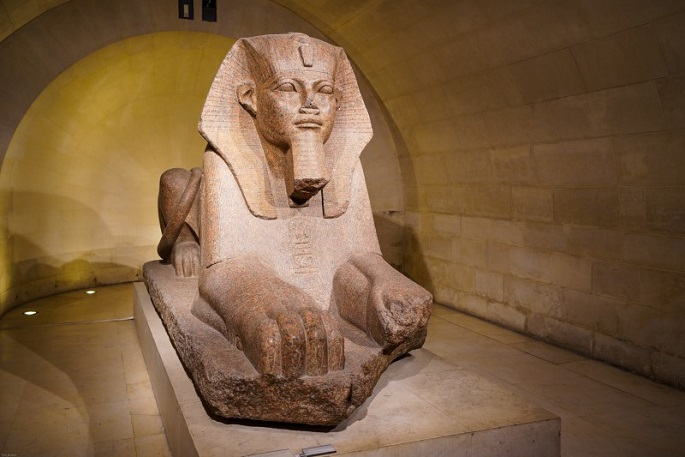

MONA LISA
레오나르도 다 빈치의 대표작 중 하나이다. 모나는 유부녀의 이름 앞에 붙이는 이탈리아어 경칭이고, 리자는 초상화의 모델이된 여인의 이름이다. 1503년 ~ 1506년경 완성된 패널화로 세계에서 가장 유명한 미술품이자 가장 가치있는 미술품으로 평가된다.
VENUS DE MILO
높이 203m, 기원전 130년에서 100년 사이에 제작된 것으로 추정되는 대리석 조각이다. 기원전 2세기에 활동한 그리스 조각가 안티오크의 알렉산드로스가 만든 것으로 알려져 있다. 그리스 신화에서 여신 아프로디테를 표현하였다고 알려져 있다. 해부학적으로 완벽한 신체와 유려한 곡선, 관능미 등 헬레니즘 미술 조각의 정점을 보여주는 작품이다.
CHOUCROUTE
프랑스의 화가 외젠 들라크루아가 그린 작품이다. 샤를 10세가 물러나는 7월 혁명을 기념하기 위해서 그린 그림디ㅏ. 이 그림의 부제는 '1830년 7월 28일'이다. 그림의 전반적인 구도가 테오도르 제리코의 메두사의 뗏목과 유사하다. 깃발을 들고 있는 여인은 로마 신화의 자유의 여신 리베르타스이고 프랑스를 상징하는 의인화도;ㄴ 캐릭터라는 이야기도 있다.
ESCARGOTS
스핑크스는 상체와 머리는 석회암 언덕을 깎아 만들고 팔과 몸통 일부분은 돌을 쌓아 만들었다. 머리는 마치 파라오처럼 관을 쓴 형상이다. 이집트 왕권을 상징하고 선한 자의 보호신 역할을 하였다.
